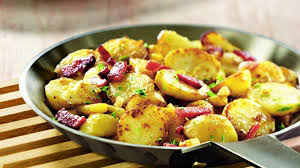

If you're deciding which places to visit in Germany, it can be difficult to pick which German cities to visit first. The range of places to visit in Germany is vast and varied, offering everything from fairytale castles to rave clubs to river cruises to hiking through lush forest. Narrowing your list down to just a few of the best places to visit in Germany is no small feat.
Before you visit Germany, there are many world-class museums in Germany to research and the German Christmas markets also make it a magical place to vist in the German holidays.
Then there's the quirky and colourful side of German culture, which can be seen in the many top German festivals, especially during carnival in Germany.
Besides the many places to see in Germany, a visit to Germany also gives you the opportunity to dig into the hearty German foods and the many regional varieties and specialities.
With great German public transport links, it is easy to travel around Germany but watch out for the top scams and make note of emergency numbers in Germany.
Here's a guide on some of the best places to visit in Germany.
Top 5 Places...
Berlin
Exciting and vibrant, Berlin is the capital of Germany and the centre for all that is hip in art, fashion, music and design, packed with amazing architecture, art galleries, museums and restaurants. You can also find some of the wildest clubs in Berlin and many quirky activites off the tourist track. Take a stroll down Unter den Linden, where you’ll find museums, the cathedral, opera house and the Brandenburg Gate, which was impassable during the days of the Berlin Wall and now symbolises German reunification. Other must-sees include UNESCO World Heritage site Museum Island, the Jewish Museum, Haus am Checkpoint Charlie and the Berlin Wall Trail to get you started.
The Black Forest
Bordering the Rhine to the west and undulating farmland to the east, the Black Forest region covers 11,000 square kilometres of peaks and valleys, vineyards, lakes and nature reserves to explore on foot, bike or horseback.
But there's plenty more to persuade even the most amateur of hikers to visit Germany. It’s also where you’ll find the world famous thermal spa town of Baden-Baden, dating back more than 2,000 years. It's where the Romans came to bathe and was also Europe’s summer capital for the rich at the turn of the 19th century. The mineral enriched waters continue to bubble up from 12 thermal springs for today’s visitors.
Heidelberg castle and old town bridge
The partially ruined yet still magnificent red-sandstone Heidelberg Castle towers over the city of Heidelberg and is one of the most famous landmarks in Europe, and among Germany’s places to visit. Built as a fortress around 1300, it grew to symbolise the power of the Electors, whose statues appear on the façade of the Freidrich building. Don’t miss the glorious Renaissance fireplace in the Ruprecht wing, the ornate Otto-Heinrich wing, the castle church and the Hortus Palarunus pleasure garden, which although never completed was once considered the eighth wonder of the world. The old bridge in the town centre crosses the Neckar River, and provides a great view of Heidelberg's scenic riverside location in southwestern Germany.
Since 2014 Heidelberg has been recognised as an UNESCO City of Literature, and indeed you'll see the city's omnipresent traces of literature and creativity in numerous publishing houses, bookstores, libraries, authors, public poetry slams, literature awards and Heidelberg's annual literature festival.
Cologne
It's more than just its world-famous cathedral
Cologne’s famous cathedral, the epitome of Gothic architecture, dominates the skyline and contains the world’s oldest large-scale sculpture – the Ottonian Gero Cross – and a window designed by 20th-century icon Gerhard Richter. Cologne also has major museums, theatres and loads of great restaurants and bars, making it one of the more vibrant places to see in Germany. Check out those around Alter Markt and Heumarkt squares, plus the brewery taverns in the old quarter where waiters refill your glass with Kölsch beer until you put a beer mat over the top to say ‘no more’.
Cologne's is also Germany’s carnival capital with a ‘fifth season’ of celebrations lasting from November through to Lent. Sweet-toothed visitors will love the Chocolate Museum with 2,000 exhibits – including a 3m high chocolate fountain into which you can dip a waffle – covering 3,000 years of chocolate history.
The exhilarating Mount Zugspitze
If seeing the Alps from Lake Constance wetted your appetite, the next step is to reach the top of Germany’s highest mountain: the Zugspitze, near Garmisch-Partenkirchen. At the top – 2,962m above sea level – there’s a 360° panorama of more than 400 peaks in Germany, Italy, Austria and Switzerland, making it one of the most unique places to see in Germany. With seven months of snow a year you can enjoy skiing, snowboarding and sledding, spend a night in the Igloo Village, or visit the mountain top in one day via an historic cogwheel train or cable car.
Best Hotels..
Traditional Food?? Traditional No
Bratkartoffeln

Bratkartoffeln are an excellent way of eating your portion of Kartoffeln in Germany.
Slice up some boiled potatoes, slice them thinly, put them in a frying pan with a lot of oil, bacon and onions and fry them until they turn dark and crispy.
Not the healthiest option on our Top 10 things to eat in Germany but definitely not the worst as well.
Currywurst
Invented in Berlin by Herta Heuwer in 1949 the Currywurst is usually made of a pork sausage either wrapped in ‘Darm’ (better not to Google what Darm means as otherwise this might put you off a bit) or without Darm.
Cut into thin slices the sausage now is covered in a mix of Ketchup and some curry powder. And ready is your first German Currywurst.
Traditionally you will eat the Currywurst accompanied by some french fries or a plain white bread.
Gulasch
Gulasch is made with thick pieces of beef meat that have been slow cooked in a rich sauce, sometimes made of red wine, which makes the meat very soft and tender. Gulasch can be eaten as a soup or with some side dishes like Spätzle.
Rouladen
If you ever want to cook Rouladen yourself we strongly advice you to go to the butcher and ask him for some ready made Rouladen in order to save you a lot of work.
If you want to prepare them yourself you need some thinly sliced beef meat, put some moustard, onions, ham and a pickle inside, roll them up and put them in the oven to cook in a sauce for some hours.
Rouladen are extremely tasty but very time consuming to prepare.
Schnitzel
If you ever want to cook Rouladen yourself we strongly advice you to go to the butcher and ask him for some ready made Rouladen in order to save you a lot of work.
If you want to prepare them yourself you need some thinly sliced beef meat, put some moustard, onions, ham and a pickle inside, roll them up and put them in the oven to cook in a sauce for some hours.
Rouladen are extremely tasty but very time consuming to prepare.
Leberkäse
Leberkäse is more a kind of a sausage that is put in the oven for a long time, then sliced and served with white bread and sweet moustard.
Very tasty but also very heavy and probably not the healthiest of all German foods.